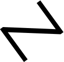

Bring your plans
Claude, OpenAI, Gemini — and your own CLI plans (self-hosted opencode, free local models). Zut never marks up a token. Your quota stays yours.

ZutProfessionals
Build anything and everything — scripts to tools to apps, in any language — without installing npm, pip, clang, Go or Rust on your machine. Bring your models, choose your compute.
Canonical positioning
Claude, OpenAI, Gemini — and your own CLI plans (self-hosted opencode, free local models). Zut never marks up a token. Your quota stays yours.
Run the agent on your machine (`npm run local`, free, nothing leaves your desk) or on Zut Compute when it's available. Workload lives where the compute is, not on your laptop.
Every agent turn lands as a reviewable diff — accept or revert per file; nothing merges without your eye on it. Your machine stays quiet; nothing to set up.
How it works
A prompt in plain English — new feature, bug fix, build tool, back-office script, API. If it can be built with code, it belongs here.
The agent works in your real workspace. Steps stream into the session, edits land as visual diffs, checkpoints capture every turn — nothing is merged blindly.
Preview in the browser; Checks record real run results; one click deploys to the web. The toolchain never installs on your laptop.
Where we differ
Cursor is a desktop IDE with an agent. Zut is a browser IDE for the professional workflow — any language, any artifact, your models, nothing to install, and a phone/Chromebook is a first-class client.
Replit's cloud runs their models on their meter and locks to their stack (Python/Node). Zut keeps you in a real IDE with your models, your keys, and any language you can name — scripts to full apps.
Lovable generates frontends from text and stops there. Zut builds applications — APIs, CLIs, data tools, full-stack apps — with diff review before anything ships and compute where you need it.
Models
Zut works with the providers you already pay — or none at all for plain code. Keys are stored only on your device and never leave it except to call the provider you chose.
Compute
Installing toolchains broke software development. Zut moves npm install, pip, clang, Go, Rust, every build — off your laptop and onto compute you control. Localhost today: run the full stack on your machine for free. Zut Compute: hosted, on demand.
`npm run local` — opencode daemon, bridge and host on your machine. Your disk, your models. Zero cloud cost; full power.
Point a VPS or team server at Zut — one host, every device connected. Files, terminal and git travel the wire; builds happen there.
Hosted compute on demand. Ship to the web without a local toolchain — the “it works on my machine” era, ended.
Any language. Your models. Nothing to install.